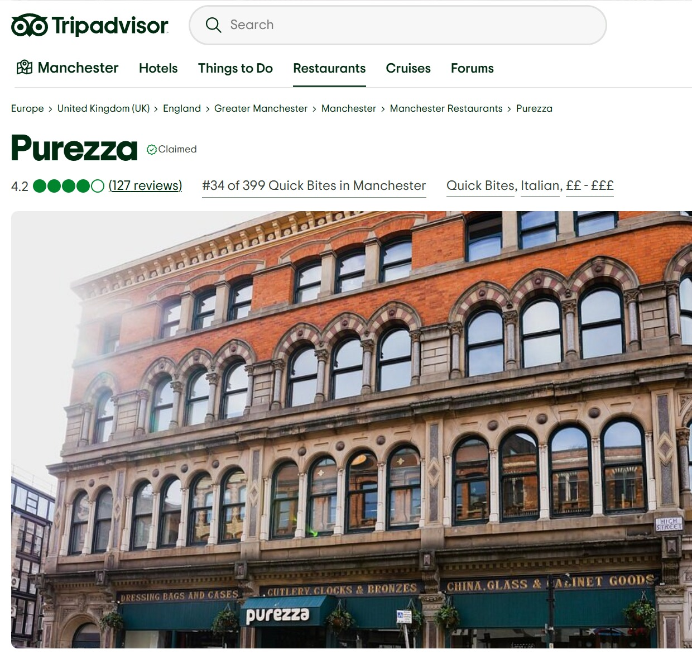

Zouk Tea Bar & Grill
Authentic Pakistani and Indian cuisine.

Purezza Manchester
Fresh seasonal dishes with a modern twist.

Circolo Popolare Manchester
Cozy atmosphere and handcrafted comfort food.
Restaurants
Reviews
Authentic Pakistani and Indian cuisine.

Fresh seasonal dishes with a modern twist.
Cozy atmosphere and handcrafted comfort food.
Manchester Eats is the best upcoming website that features all the best restaurants in manchester! Click our restaurant page to find out more!